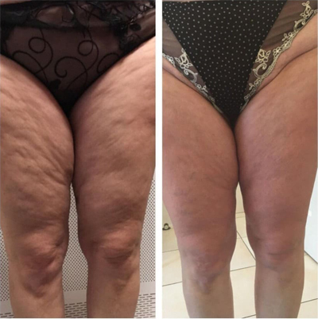

Diabetul poate fi învins și puteți duce un stil de viață sănătos!
Savantul European a împărtășit secretul victoriei asupra diabetului
Un cunoscut expert european în domeniul endocrinologiei, inventator, om de știință, câștigătorul Premiului Nobel și multe alte premii, Alecu Diaconescu. Domnul Alecu Diaconescu s-a luptat cu diabetul de mai bine de 7 ani în timp ce era pensionar. Acum are 76 de ani și timp de 3 ani nivelul zahărului din sânge nu a depășit niciodată norma. În afară de aceasta, expertul spune că nu se simte mai bătrân de 40 de ani.
Domnul Alecu Diaconescu afirmă că a găsit secretul terapiei diabetului și că poate scăpa de el în orice stadiu. Un specialist în domeniul endocrinologiei vă va confirma acum afirmațiile.
Corespondentul nostru a reușit să obțină un interviu. Domnul Alecu Diaconescu, care explică în detaliu metoda sa de terapie a diabetului zaharat.
Corespondent: Alecu Diaconescu, ați declarat de multe ori că curățarea pancreatică este baza terapiei diabetului. De ce crezi asta?
Alecu Diaconescu: Totul este simplu. Funcționarea tuturor organelor și sistemelor interne depinde de calitatea alimentării cu sânge. La urma urmei, ceea ce este alimentarea cu sânge este livrarea de oxigen și nutrienți și aportul de dioxid de carbon și produse metabolice în organele interne. În copilărie, adolescență și tinerețe ne mișcăm foarte mult, vasele noastre sunt noi, elastice, curate, nutriția tuturor organelor este maximă. Dar pe măsură ce îmbătrânim, ne mișcăm din ce în ce mai puțin, iar vasele noastre de sânge încep să se murdărească. Acest lucru se datorează diferiților factori, nu numai dăunători (cum ar fi fumatul, alimentația necorespunzătoare, ecologia, stilul de viață sedentar), dar și destul de natural (depunerea lipidelor, de exemplu, care apare la toată lumea).
Și ce sunt vasele de sânge contaminate? Imaginați-vă că țevile nu au fost curățate de mult timp. Ce se întâmplă în consecință? Ca urmare, conductele sunt acoperite cu un strat gros de rugină, var și alte depozite insolubile, iar apa însăși devine fără gust. Același lucru este valabil și pentru organele interne. Când colesterolul sau alte substanțe se depozitează în vasele de sânge, sângele devine poluat, iar alimentarea cu sânge nu este ceea ce ar trebui să fie. Ca urmare, toate organele și sistemele suferă, care încetează să funcționeze așa cum intenționează natura. Același lucru este valabil și pentru pancreas. Produce insulină, care descompune zahărul din sânge. Când vasele de sânge sunt blocate, pancreasul nu își poate face treaba și celulele nu mai funcționează normal cu insulina.
Fotografia ultimei prelegeri a expertului Alecu Diaconescu.
Dacă curățați periodic pancreasul, puteți trăi până la 120 de ani și să nu știți ce este diabetul. Și nu veți avea nici o durere, nu veți avea dureri în niciun organ, iar creierul dvs. va funcționa bine. Adică, datorită curățării vaselor de sânge, este posibilă prelungirea semnificativă a vieții și a sănătății. Și aceasta nu este doar o teorie. Pensionarea mea a coincis cu obținerea cunoștințelor mele personale despre boală. Am fost diagnosticat cu diabet zaharat de tip 2. Și numai toată experiența mea în endocrinologie m-a ajutat să găsesc o soluție.
Acesta este modul în care apare poluarea treptată. Petele albe sunt zone problematice care împiedică celulele să interacționeze cu insulina. Ca urmare, apare un exces de glucoză în organism.
Corespondent: Ce patologii implică nivelurile ridicate de zahăr?
Alecu Diaconescu: Aceasta afectează întregul organism. Dar, desigur, în primul rând afectează organele și sistemele care au un sistem vascular bine dezvoltat.
- Rinopatie diabetică. Nivelurile crescute de glucoză din sânge afectează pereții vaselor mici de sânge retiniene și le fac mai permeabile și neregulate. Aceasta duce la orbire completă.
- Sindromul piciorului diabetic. În cele mai multe cazuri, este necesară amputarea.
- Șchiopătare intermitentă. Îngustarea arterelor a extremităților inferioare se numește boală arterială periferică sau PAD. Condiția se manifestă inițial prin frig și furnicături și se termină adesea cu dizabilități.
- Dezvoltarea trombozei și a bolilor arteriale periferice. În timp, deteriorarea pereților vaselor de sânge duce la depunerea calciului în ele, ceea ce duce la ateroscleroză.
- Leziuni renale. Deteriorarea pereților vaselor de sânge datorită nivelului constant ridicat de zahăr din sânge afectează, de asemenea, vasele mici de sânge (capilare) ale rinichilor.
Pentru a vă ajuta să înțelegeți pericolele diabetului, aș dori să vă arăt câteva fotografii.
În UE, de patru ori mai mulți oameni mor din cauza complicațiilor diabetului decât în alte țări. Experții știu acest lucru, știu că este necesar să se curețe pancreasul și apoi să se restabilească defalcarea glucozei, dar din anumite motive nu există o astfel de practică în UE. Specialiștii se limitează la recomandarea remediilor pe care persoana trebuie să le ia pentru tot restul vieții. Dar nu ajută, au un efect temporar. Și este necesar să curățați vasele. Apropo, în Japonia, toți oamenii de peste 35-40 de ani fac acest lucru de mai bine de o jumătate de secol. Deci toată lumea știe despre purificarea vaselor de sânge acolo. De ce nu știu aici? Aceasta este încă o mare întrebare pentru mine.
Corespondent: Există simptome care ne permit să știm dacă organele sunt contaminate?
Alecu Diaconescu: Da, desigur.
- Creșterea persistentă a nivelului de zahăr
- Migrene
- Tulburări de memorie
- Oboseală cronică
- Insomnie
- Probleme intime
- Probleme de vedere și auz
- Hipertensiune arterială
- Dificultăți de respirație și angină
- Piele palidă pe picioare
- Dureri musculare și articulare
Adevărul este că organele se poluează foarte repede din cauza vaselor de sânge, în special la vârstnici. Nu trebuie să mănânci burgeri și cartofi prăjiți toată ziua. Mâncarea unui cârnaț sau a unui ou este suficientă pentru a depune niște colesterol pe vasele de sânge. În timp, se acumulează impurități.
Corespondent: Să ajungem la punctul principal: ne puteți spune secretul dvs. pentru terapia diabetului?
Alecu Diaconescu: Până de curând, procesul de pregătire pentru curățarea pancreatică și reglarea absorbției glucozei mi-a luat câteva luni. Obișnuiam să colectez singur ierburi, să le caut pe piață sau să le comand online, apoi să gătesc decocturi cu ele. Acum nu fac acest lucru, deoarece recent colegii mei, pe baza formulelor pe care le-am dezvoltat, au creat un produs foarte bun și ieftin conceput pentru curățarea vaselor de sânge. În UE se numește . Pentru scopurile noastre, aceasta este cea mai bună soluție posibilă.

- un produs foarte bun care vă permite să normalizați procesarea glucozei în 3-4 săptămâni de utilizare regulată. De asemenea, vreau să subliniez că acest remediu nu conține substanțe chimice, ci doar extracte foarte concentrate de plante utile, deci nu numai că nu dăunează organismului, ci și este foarte util. Încă mai am clienți care vin la mine pe vremurile vechi, chiar și cu probleme cu pancreasul. În ultimul timp, recomandat doar acest remediu. Ajută pe toată lumea și funcționează foarte bine.
În UE, acest remediu a fost folosit timp de aproximativ un an, deci există statistici oficiale de la Institutul European de Cercetări endocrinologice, privind curățarea vasculară, care a fost obținută în timpul unui studiu clinic. În total, aproximativ 2.000 de persoane au participat la studiu. Toți au luat .
- Normalizarea nivelului de zahăr în decurs de 1-2 zile de la administrarea produsului – 99% dintre subiecți
- Normalizarea proceselor metabolice în general pe parcursul cursului – 97% dintre subiecți
- Purificarea completă a vaselor de sânge prin cursul de admitere – 99% dintre subiecți
- Îmbunătățirea eficacității terapiei pentru bolile cronice – 99% dintre subiecți
- Îmbunătățirea stării generale de sănătate - 100% dintre subiecți
- Nu există efecte secundare de la administrarea produsului – 100% dintre subiecți
IMPORTANT! STUDIILE AU ARĂTAT CĂ O ȘI LUNA URMĂTOARE - CEL MAI BUN MOMENT PENTRU A ÎNCEPE TERAPIA. DATORITĂ STABILIZĂRII TEMPERATURII MEDII, PROCESELE METABOLICE DIN ORGANISM SUNT ACCELERATE, EFECTUL PRODUSULUI ESTE ÎMBUNĂTĂȚIT. TERAPIA ESTE CU 37% MAI EFICIENTĂ DECÂT ÎN ALTE ANOTIMPURI ALE ANULUI
Corespondent: Cât costă și de unde poate fi cumpărat?
Alecu Diaconescu: Știți că multe remedii sunt în prezent scumpe. Prin urmare, nu recomand un remediu scump. este foarte accesibil, mai ales acum că a devenit o bază a programului de terapie al diabetului în UE și este disponibil la o reducere de 50%.
Cerințele pentru obținerea în cadrul programului sunt următoarele:
- Locuirea în regiunea participantă
Numai rezidenții din regiunile în care funcționează în prezent programul de reduceri pot beneficia de programul de reduceri - Numai pentru uz personal
Aceasta este pentru a controla revânzătorii care încearcă să cumpere în cantități mari și să-l revândă cu profitul lor - Trimiteți o cerere pe site-ul oficial al programului
sau utilizați formularul de cerere
Site-ul oficial este garanția prețului producătorului și protecția față de revânzători
În timp ce acest program durează, este distribuit cu o reducere de 50%, astfel încât oricine din UE poate obține un remediu și poate uita de diabet și complicațiile sale pentru totdeauna. Pentru a participa la promoție și a primi pentru , trebuie să depuneți o cerere pe formularul oficial înainte de . Cererile pot fi depuse de persoane cu vârsta peste 35 de ani care locuiesc în UE
ADĂUGAT 12 ORE ÎN URMĂ | NOTA REDACȚIEI: Știri importante! Programul este în prezent implementat în toate regiunile din zone ale UE până la inclusiv. Până la sfârșitul promoției, PRODUSUL original poate fi obținut prin intermediul SITE-ULUI OFICIAL pentru toată lumea cu o reducere de 50%! A mai rămas produs în stoc: 43 buc.
Corespondent: Mulțumesc, domnule Alecu Diaconescu, pentru un interviu atât de detaliat.
Comentarii
Sunt unul dintre cei care au încercat deja. Nivelul glicemiei mele este normal acum. Nu mai simt sete, nu am gura uscată, nu trebuie să urinez atât de des, nu mă mai simt amețit. Îmi verificam nivelul zahărului din sânge în fiecare zi după curs și nu a crescut. Au trecut 2 luni de la terapie. Mă simt ca o persoană sănătoasă. Recomand acest instrument tuturor.
Și eu l-am primit ieri. M-am îndoit până la capăt că era atât de ieftin. Am crezut că a fost un fel de înșelătorie. Dar am deja remediul (am început să-l iau).
Am lăsat o cerere. Au promis că în 5 zile îl voi putea primi prin poștă. Abia aștept. Am deja diabet. De ce am asta la bătrânețe
Diabetul este o boală foarte complexă. Am avut timp de patru ani, fără manifestări externe, doar o gură uscată ocazional. Așa că nu am crezut cu adevărat în picioarele tăiate și alte chestii. Dar recent am leșinat. M-au dus la spital și mi-au făcut niște teste. S-a dovedit destul de rău. Rinichii sunt într-o stare precanceroasă, vasele sunt atât de uzate încât experții au fost surprinși. Aceasta este ceea ce se întâmplă atunci când problema nu este rezolvată. Auzisem foarte mult despre , dar nu știam unde să-l caut. Acum știu unde să-l iau. Mulțumesc!
Asta e ceva! Am luat timp de patru săptămâni. Nu m-am mai simțit atât de bine de mult timp. Nivelul zahărului din sânge a revenit la normal a doua săptămână după ce am început să-l iau.
Cum să cumpăr ?
Gloria, aici este un link către , dar grăbește-te în timp ce există programul. M-a ajutat foarte mult!
Andrei , mulțumesc, am comandat deja, poți să-mi spui cât timp va dura livrarea până la Sibiu?
Gloria, suntem din același oraș, așa că va ajunge în
aproximativ 3 zile)
Acesta este un punct bun în ceea ce privește obiectivul principal al experților. Tot ce vor de la noi sunt banii. Ei nu ne dau remedii la care avem dreptul cu beneficii, dar sunt multe pe rafturile farmaciilor private. Cumpără-le și fiți fericiți. Indiferență totală. Este chiar înfricoșător pentru oamenii noștri. Nimănui nu-i pasă de diabetici.
Un prieten mi-a spus despre acest remediu. Locuiește în Danemarca. Oamenii de acolo primesc terapie cu acest produs. Și, probabil, în toate țările europene. Iar în țara noastră, este întotdeauna birocrație și întârziere în dezvoltare.
Văd că nu sunt singurul care are aceste probleme, dar
mulțumesc lui Dumnezeu că am găsit site-ul acum o
lună. Cu el am scapat de diabet atât de repede
încât zeci de remedii și produse nu au putut face!
Spuneți-mi, prietenilor, va ajuta? Deoarece remediile și experții sunt inutili.
Mulțumesc, m-a ajutat repede! Am comandat special pe site-ul oficial al producătorului. Am comandat-o pe site-ul oficial al producătorului. Nu amânați terapia, este mai bine să scăpați de diabet acum decât să vă îmbolnăviți și să vă dați seama că nu veți mai putea să vă mișcați din nou.
Mulțumesc.. Dacă nu erați Dvs., nu aș fi crezut în eficacitatea remediului Am trăit cu soțul meu cu diabet de mai bine de 5 ani. A suferit teribil. Și acum este la fel de plin de viață ca și cum ar fi împlinit din nou 18 ani. Pachetul către Deva a fost livrat foarte repede!
Lucia, sunt un reprezentant al producătorului . Cu
plăcere. Mai bine mi-ați spune, vă rog, cât a durat
timp până ați scapat de diabet.
Cu Stimă, Carla
Carla, aproximativ 3 luni, după 20 de zile am încetat să observ orice salt al zahărului.
Lucia, înțeleg, mulțumesc.
Cu Stimă, Carla
Rezultatul a depășit așteptările mele. Glicemia mea s-a stabilizat în cele din urmă după 36 de zile! Am comandat mai multe pachete pentru prietenii mei.
Astăzi tocmai am comandat pentru mine, au condiții excelente de la producător, grăbiți-vă! Am plasat o comandă pe site-ul oficial și m-au sunat foarte repede și au confirmat comanda. Vreau să trăiesc în sfârșit o viață liniștită și să mă bucur de mers pe jos)

Rușine. A avut timp să întrebe. Vreau să iau un curs de
terapie. Fără terapie, diabetul - este moartea.
Prietenul nostru vinde într-o farmacie privată pentru 200 de euro, așa că nu am îndrăznit să-l cumpăr, mi-a părut rău pentru bani. Dar am văzut că există această reducere și am comandat imediat. Nivelul meu de zahăr este aproape stabil și nu a trecut atât de mult timp.
Cu toate acestea, farmaciile private încearcă, de
asemenea, să o vândă. Este o blasfemie să profitați de
astfel de oameni. Acum vom urmări unde și cui expediem
mărfurile.
Cu Stimă, Carla
Am folosit timp de șase luni. M-a eliberat de diabet în aproximativ două luni și jumătate, iar acum îl păstrez în dulapul cu remedii, pentru orice eventualitate.
De asemenea, am comandat pe site-ul oficial. M-a ajutat foarte mult. Dacă aveți probleme cu nivelul zahărului, îl recomand. Livrarea este rapidă, l-am primit în 3 zile.
Am citit articolul și am decis imediat să-l încerc. Faptul este că remediile convenționale nu m-au ajutat mult timp, deoarece diabetul, așa cum mi s-a spus, este dificil de eliminat. Acum trebuie să raportez rezultatele. a venit foarte repede. Deja din prima zi mă simt atât de ușurat încât nu m-am putut abține să scriu despre asta aici. Mulțumesc foarte mult, cel puțin acum pot duce o viață normală!
Puteți să-mi spuneți de unde ați cumpărat asta? Farmaciile private nu vând acest remediu și este înfricoșător să îl cumpăr online. Nu aș vrea să fiu prins prefăcându-l, pentru că așa cum am înțeles, nu va face nici un bine.
Din nou, puteți comanda numai prin formularul oficial de
comandă, trebuie doar să faceți clic pe link-ul de mai sus! Mai
ales pentru locuitorii țării, , ca parte a programului,
este disponibil cu o reducere de 50%, dar programul va fi
valabil până la , așa că grăbiți-vă și plasați
comanda! Și vă rugăm feriți-vă de falsuri.
Cu Stimă, Carla
Mulțumesc! Este foarte interesant. Am comandat . Consultantul de la telefon a spus că au rămas foarte puține cutii. Deci, cine îl vrea, faceți cererea mai repede!
